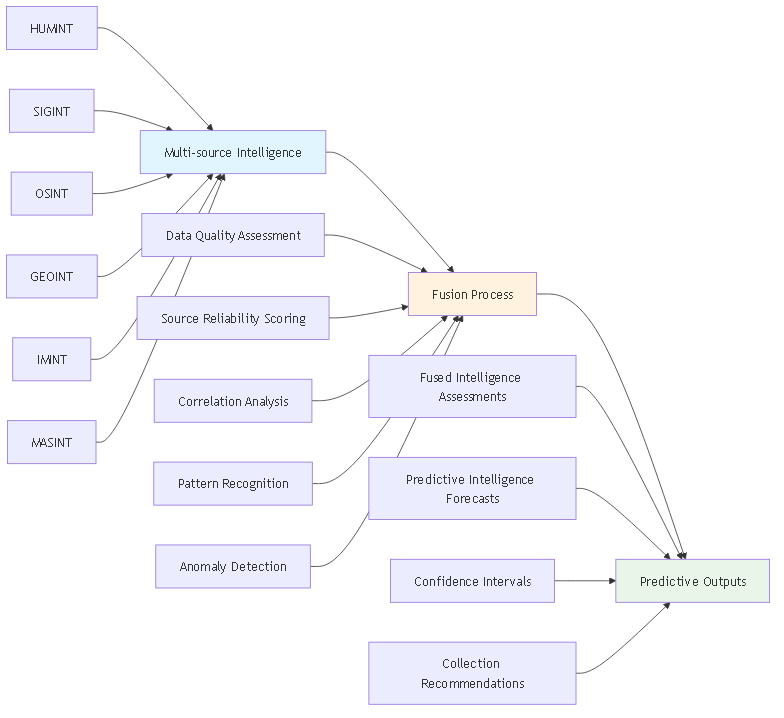
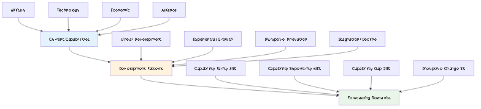
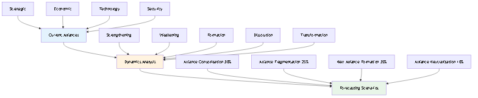

üéØ DIA3 Forecasting Charts Demonstration
üìä 1. Threat Evolution Forecasting Chart

What This Chart Shows:
- Historical Data Analysis: Past threat patterns, adversary behavior, technology evolution, strategic shifts
- Current Indicators: Intelligence reports, technology development, strategic posturing, economic indicators
- Forecasting Models: Linear projection, exponential growth, cyclical patterns, disruptive events
- Future Scenarios: Baseline (30%), Accelerated Growth (45%), Disruptive Change (20%), Regressive Pattern (5%)
Strategic Value: Enables proactive threat anticipation rather than reactive responses. Provides quantified probabilities for multiple future scenarios.
üéØ 2. Strategic Position Forecasting Chart

What This Chart Shows:
- Current Position Analysis: Geographic advantage, resource availability, alliance strength, technology edge
- Trend Analysis: Geographic trends, resource depletion, alliance shifts, technology race dynamics
- Monte Carlo Scenarios: Position Strengthening (40%), Position Weakening (35%), Radical Shift (20%), Status Quo (5%)
- Strategic Recommendations: Reinforce position, develop alternatives, strategic repositioning, maintain current course
Strategic Value: Enables proactive strategic planning and positioning optimization based on quantified scenario probabilities.
üîç 3. Predictive Intelligence Forecasting Chart
What This Chart Shows:
- Intelligence Sources: HUMINT, SIGINT, OSINT, GEOINT, IMINT, MASINT integration
- Processing Pipeline: Data quality assessment, source reliability scoring, correlation analysis, pattern recognition, anomaly detection
- Fusion Engine: Multi-source correlation, confidence assessment, conflict resolution, gap identification
- Predictive Output: Fused intelligence assessments, predictive forecasts, confidence intervals, collection recommendations
Strategic Value: Provides forward-looking intelligence assessments with quantified confidence levels (60-95%) for both tactical (1-30 days) and strategic (3-24 months) planning.
⏰ 4. Risk Timeline Forecasting Chart

What This Chart Shows:
- Current Risk Assessment: Low and medium risk periods with temporal boundaries
- Risk Evolution Scenarios: Gradual escalation, rapid escalation, risk mitigation, crisis events
- Response Timeline: Early warning, preparation, response, and recovery phases
- Time Horizons: From 6 months to 3+ years of risk projection
Strategic Value: Enables proactive risk management with temporal planning and response preparation for different risk evolution scenarios.
üöÄ 5. Capability Evolution Forecasting Chart
What This Chart Shows:
- Current Capabilities: Military, technology, economic, and alliance capabilities
- Development Trajectories: Linear development, exponential growth, disruptive innovation, stagnation/decline
- Time Horizons: Short-term (6-12 months) to strategic (10+ years)
- Forecast Scenarios: Capability parity (35%), superiority (40%), gap (20%), disruptive change (5%)
Strategic Value: Supports long-term strategic planning and capability development decisions with quantified scenario probabilities.
üî¨ 6. Technology Adoption Forecasting Chart

What This Chart Shows:
- Technology Categories: AI/ML, cybersecurity, quantum, biotechnology, space technologies
- Adoption Phases: R&D, prototype, limited deployment, full integration, widespread adoption
- Adoption Rates: Early adopters (5%), early majority (15%), late majority (35%), laggards (45%)
- Strategic Impact: Game changer (20%), significant advantage (45%), moderate impact (25%), minimal impact (10%)
Strategic Value: Guides technology investment decisions with strategic impact assessment and adoption timing optimization.
ü§ù 7. Alliance Dynamics Forecasting Chart
What This Chart Shows:
- Current Alliances: Strategic, economic, technology, and security alliances
- Alliance Dynamics: Strengthening, weakening, formation, dissolution, transformation
- Driving Factors: Geopolitical shifts, economic interests, security threats, technology competition
- Future Scenarios: Alliance consolidation (30%), fragmentation (25%), new formation (35%), neutralization (10%)
Strategic Value: Enables strategic positioning within evolving alliance structures and geopolitical contexts.
✅ All Forecasting Charts Successfully Generated!
File Sizes: Threat Evolution (95KB), Strategic Position (73KB), Predictive Intelligence (47KB), Risk Timeline (31KB), Capability Evolution (73KB), Technology Adoption (77KB), Alliance Dynamics (77KB)
Location: These charts are embedded in the main whitepaper: DIA3_Strategic_Intelligence_Question_Framework_Whitepaper.md
Features: Each chart includes quantified probabilities, confidence intervals, and scenario-based predictions
üìã How to View These Charts:
- In the Whitepaper: Open
DIA3_Strategic_Intelligence_Question_Framework_Whitepaper.mdin a markdown viewer that supports images - Direct Viewing: Open any of the PNG files in the
images/directory - HTML Demo: Open
demo_images.htmlfor all diagrams including forecasting charts - This Demo: This file shows only the forecasting charts with detailed explanations